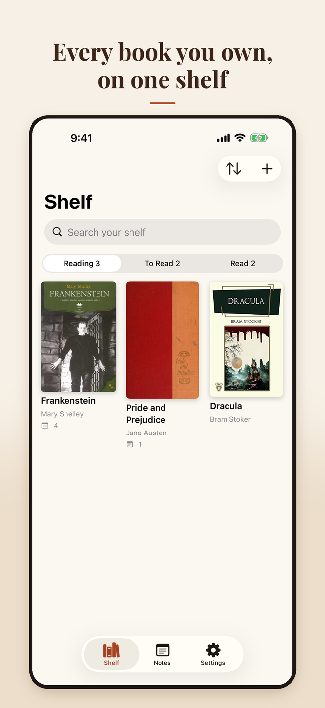
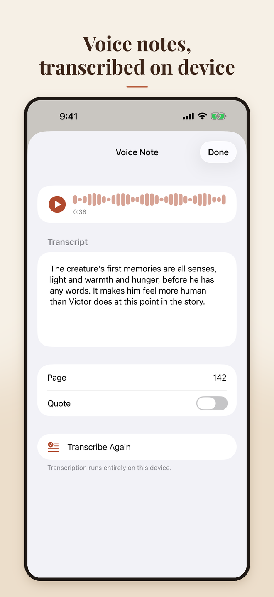

Add books fast
Search Open Library, scan a barcode, type an ISBN, or add a book by hand with your own cover photo.
Book notes for iPhone and iPad
Shelfspoken keeps a shelf of the books you own and lets you capture thoughts by voice, keyboard, or Apple Pencil. Voice notes are transcribed on your device, and your library syncs privately through your own iCloud.


What it does
Search Open Library, scan a barcode, type an ISBN, or add a book by hand with your own cover photo.
Mark each book and track your page. Covers are saved with the book so your shelf works offline.
Record a thought and get a transcript made on your device. The recording is kept so you can play it back.
Write notes by hand on lined paper. Handwriting is recognized on device so it's searchable.
Books, notes, recordings, and handwriting sync between your devices through your private iCloud.
Export a zip with Markdown, JSON, your recordings, and handwriting images.
Support
Shelfspoken is free to try for 7 days with every feature. After that, a one-time in-app purchase unlocks adding new books and notes for good. There's no subscription. Even without the unlock you can always read, play back, search, and export everything you've already saved.
Open Settings → Restore Purchases while signed in with the same Apple Account you used to buy it.
Make sure both devices are signed in to the same iCloud account and Shelfspoken is allowed to use iCloud (Settings → [your name] → iCloud). Open the app on both devices and give it a minute on Wi-Fi. Settings → iCloud Sync in the app shows the current status. If you're signed out of iCloud, everything still works and is saved on the device, and it syncs once you sign in.
Transcription runs on your device and needs speech recognition permission. Check Settings → Privacy & Security → Speech Recognition. Your device may also need to download the speech model for your language once; choose the language under Settings → Voice Notes in the app. Recordings are always saved, and you can tap Transcribe Again later.
Book details and covers come from Open Library, a free catalog that doesn't have every edition. Try searching by title, or use Manual to add the title, author, ISBN, and a photo of the cover yourself.
If you added the same book (same ISBN) on two devices, Shelfspoken merges them automatically the next time it opens and keeps every note from both copies.
Handwritten notes are made on iPad. They sync to iPhone, where you can view them and their recognized text.
Open Settings → Export Books & Notes to create a zip with Markdown, JSON, your audio recordings, and handwriting images that you can save to Files or share.
Email highscorejimmy@icloud.com with your device model, iOS version, and what happened. Please don't send copies of books or other copyrighted material.